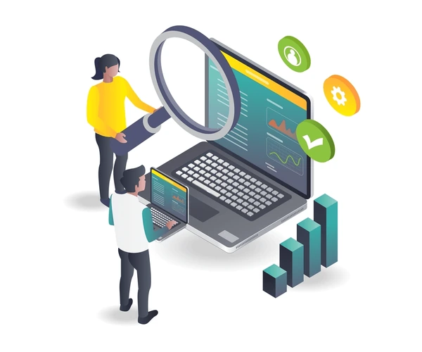
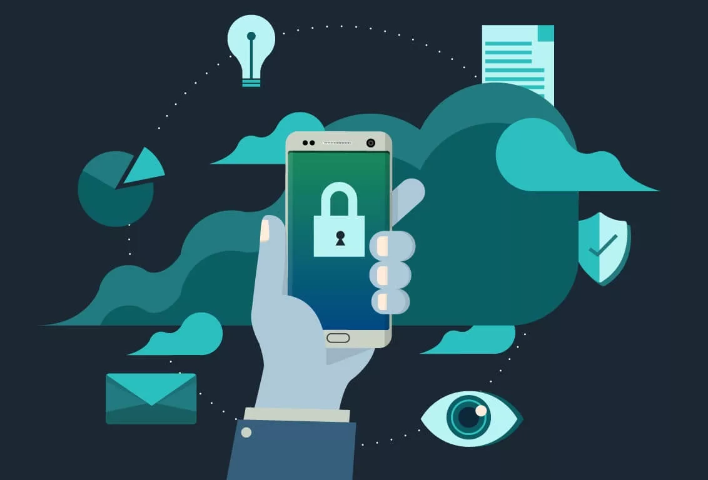
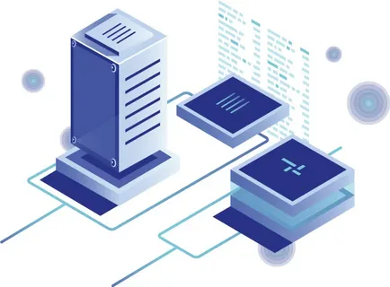

7. Обучение сотрудников
Люди остаются слабым звеном в цепочке информационной безопасности. Регулярное обучение персонала помогает снизить риски, связанные с человеческим фактором. Сотрудники должны понимать, как распознать фишинговые письма, защищать пароли и безопасно работать с конфиденциальной информацией.
Чему учить сотрудников?
- Основам кибергигиены (правильное использование паролей, уход от подозрительных ссылок).
- Методам социальной инженерии и способам противодействия ей.
- Правилам безопасного поведения в интернете и работе с мобильными устройствами.
8. Мониторинг и аудит
Для поддержания высокого уровня безопасности необходимо постоянно следить за состоянием информационных систем. Аудит безопасности помогает выявить слабые места и предотвратить возможные атаки. Анализ журналов событий и мониторинг сетевого трафика позволяют оперативно реагировать на подозрительные активности.
Какие инструменты мониторинга использовать?
- Системы управления событиями безопасности (SIEM).
- Решения для анализа сетевых потоков (NetFlow).
- Инструменты обнаружения вторжений (IDS/IPS).
9. Защита мобильных устройств
Смартфоны и планшеты стали неотъемлемой частью деловой среды, но они также являются привлекательной мишенью для киберпреступников. Для защиты мобильных устройств применяйте следующие меры:
- Включите шифрование данных.
- Устанавливайте мобильные антивирусные программы.
- Блокируйте устройство с помощью PIN-кода или биометрической аутентификации.
10. Физическая безопасность
Помимо цифровых мер, нельзя забывать о физической защите оборудования. Серверы, компьютеры и другие важные устройства должны находиться в охраняемых помещениях с ограниченным доступом. Камеры видеонаблюдения, системы контроля доступа и сигнализация помогут предотвратить кражу или саботаж.
Заключение
Информационная безопасность — это непрерывный процесс, требующий постоянного внимания и адаптации к новым угрозам. Применение перечисленных мер поможет вам значительно снизить риски утечки данных, кибератак и других инцидентов. Помните, что каждая организация уникальна, и подход к обеспечению безопасности должен учитывать специфику вашего бизнеса.